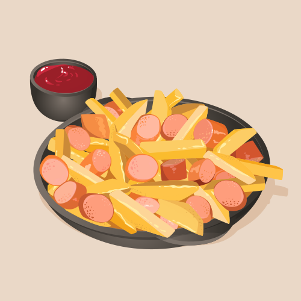

Home
receta para unas buenas salchipapas

Descripción
El plato indispensable en la comida de los colombianos. una receta increíble por la
explosion de sus sabores, por el deleite de paca bocado y que ademas, es el plan perfecto
para una primera cita con una chica.
Ingredientes
- papas
- salchicha
- aceite
- salsas
- queso mozzarella
Preparación
- pelar las papas
- picar las papas en fósforo
- calentar el aceite
- fritar las papas
- picar la salchicha
- fritar la salchicha
- armar el plato con la papa
- agregar la salchicha
- agregar las salsas
- derretir el queso
- verter el queso encima de las salchipapas y listo